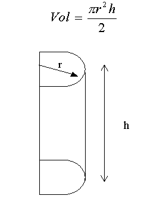

Descripción:
- Desarrollarán la solución de
algunos problemas.

Objetivo:
- Escribir programas simples en
Python que impliquen el uso de operadores básicos.

Modalidad y
forma de trabajo:
- De manera
individual, desarrolla el algoritmo
y posteriormente el programa completo en Python para cada
uno de los ejercicios que se presentan a continuación.
- Entrega vía Canvas, los
archivos *.py que contengan los programas en Python. Es
importante que al inicio de cada programa coloques el o los
algoritmos que utilizaste.

Instrucciones:
Ejercicio 1
Desarrolla el
algoritmo y posteriormente el programa completo en Python que solicite
al usuario el valor asignado de los lados A y C de un
triángulo rectángulo y que calcule el valor resultante del lado B.
Para la solución de este problema se sugiere que utilices el teorema de
Pitágoras.
El cálculo de la raíz cuadrada se puede
realizar utilizando la funcion math.sqrt
perteneciente a la libreria math
( import math ).
Por ejemplo:
-
x = math.sqrt ( y )
La raiz de y
se guarda en la variable x.
-
x = math.sqrt ( y+z )
La raiz de y + z
se guarda en la variable x.
.
- Incluye el algoritmo como comentario al inicio del programa.
-
Guarda el archivo con el nombre
L1_Matricula.py
Ejercicio 2
Desarrolla el
algoritmo y posteriormente un programa completo en Python que determine
el volumen de la siguiente figura geométrica (imagine que es un medio
cilindro). El radio (r) y la altura (h)
son solicitadas al usuario.

-
Para el valor de
PI utiliza
la constante matemática math.pi.
Para utilizar esta constante agrega la libreria
math al
inicio de tu programa (import math).
-
Incluye el algoritmo como comentario al inicio del programa.
-
Guarda el archivo con el nombre
L2_Matricula.py

Recursos:
Jerarquía de Operadores: Aritméticos,
relacionales y lógicos:
4.
JerarquiaOperadores

Forma de
entrega:
- Envía tus archivos por
Canvas, no se aceptarán
tareas por ningún otro medio.
-
Envía solo tus archivos *.py.
-
Los archivos enviados posteriormente a la fecha límite
no serán calificados.
.
Instrucciones para enviar tu tarea por Canvas
- Haz clic en el
botón de Tareas.
- Haz clic en la actividad
de EntregaTareaCalculos.
- Haz clic en el botón de
Entregar tarea.
- En el fólder de
Carga del archivo, haz clic en el botón de
Examinar y localiza el archivo *.py. Si necesitas agregar
más archivos, haz clic en + Agregue otro archivo,
haz clic en el botón de Examinar y localiza el
otro archivo *.py.
- Cuando hayas terminado
de subir tus archivos, haz clic en el botón de Entregar
tarea y listo!!!
|